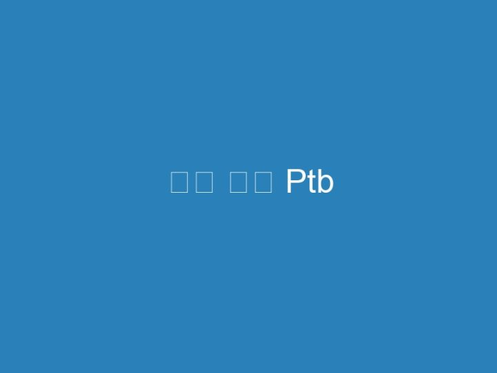

디스 코드 Ptb
Nu există informații disponibile pentru această pagină.2 nov. 2023 — Discord PTB는 Discord Stable의 공개 테스트 빌드이며 PTB는 ‘Public Test Build’의 약자이다. 2. 특징[편집]. Discord Stable에 아직 출시되지 않은 …Nu există informații disponibile pentru această pagină.20 nov. 2023 — Discord™ PTB portable. A proprietary freeware VoIP application designed for gaming communities. GitHub Stars Latest release …15 aug. 2023 — PTB Discord is the “Public Test Build” version of Discord. You can think of this as a Beta build for Discord, where the developers push new …Discord PTB portable for Windows. Contribute to portapps/discord-ptb-portable development by creating an account on GitHub.개발한에서 Shareware 소프트웨어입니다. 그것은 지난 달 동안 우리의 클라이언트 응용 UpdateStar 사용자에 의해 업데이트 31 번 확인 했다. Discord PTB의 최신 버전은 …UpdateStar – 에서 소프트웨어를 다운로드 하는 무료 mobile discord ptb.22 aug. 2021 — 디스코드 계정을 이렇게 브라우저가 아닌 프로그램으로. 따로 사용하고 싶으실 겁니다. 그래서 준비한 것이 바로 Discord PTB. 디스코드 테스트 버젼 …Welcome to Discord’s home for real-time and historical data on system performance.It gets features earlier than the normal client. Discord PTB is a public test build for Discord Testers. Discord PTB is fairly similar to Discord Canary.6 ian. 2023 — 29 votes, 12 comments. https://discord.com/api/download/ptb?platform=osx <- Direct download link.Logo for Discord PTB. Discord PTB. Whether you’re part of a school club, gaming group, worldwide art community, or just a handful of friends that want to …Download Discord 6.7.4 Beta APK – Discord is a cross-platform service that’s built specifically for gamers, and it benefits from an Android ap…25 oct. 2019 — 디스코드(Discord)는 게임용 음성 채팅 프로그램으로 게이머들이 … 위 조치에도 디스코드 설치 시 오류가 발생된다면 Discord 테스트 버전인 ‘PTB …12 apr. 2018 — Discord is an excellent way to chat with friends through text or voice. MobileDiscord PTB (public test build) brings Discord to a mobile- …( resouces: Mobile Discord Ptb ). MobileDiscord is a mobile-friendly UWP port of Discord, a cross-platform voice and text chat app designed for gamers.1 feb. 2021 — If features or bug fixes in Discord Canary are safe, they’ll be added to the Discord Public Test Build (PTB) for further beta testing before …10 oct. 2020 — Discord PTB. Windows – https://discord.com/api/download/ptb?platform=win. macOS – https://discord.com/api/download/ptb?platform=osx.2 apr. 2023 — Discord Public Test Build (PTB) is another test tool for Discord Stable. If features or bug fixes in Discord Canary are safe, they will be added …To test beta versions of apps and App Clips using TestFlight, you’ll need to accept an email or public link invitation from the developer and have a device that …16 mar. 2019 — ‘다운로드 PTB’를 눌러 받으시면 다운로드가 되고 설치가 됩니다! 아무래도 일반 디스코드와 다른 파일로 인식되어서 설치 되는듯 합니다. Discord PTB …BetterDiscord extends the functionality of DiscordApp by enhancing it with new features.Keeping you posted on Discord’s outages. Follow to instantly get notified whenever Discord is having an outage.방법 XNUMX: Discord 웹 버전을 대신 사용 … PTB 버전의 Discord를 사용해도 문제가 해결되지 않으면 웹 버전의 Discord를 사용하세요. 다행히 Discord 웹캠 녹색 화면을 …23 ian. 2021 — 디스코드. 마이너. 설정 연관 글쓰기 … Discord PTB – dc App. 2021.01.23 23:07. 피티에스. PTB랑 같이 쓰셈 – dc App. 2021.01.24 09:37.Select the option you are having issues with, and help provide feedback to the service. Server Connection App Voice Something else… Discord outages reported …Install. for Discord Stable for Discord PTB for Discord Canary · GitHub · Discord …brew install –cask discord. Name: Discord. Voice and text chat software. https://discord.com/ · /api/cask/discord.json (JSON API) · Cask code on GitHub.Discord: Talk, Chat & Hang Out APKs – APKMirror Free and safe Android APK downloads.Yes, Native Apple Silicon Support. May also be known as Discord, Discord for M1, Electron Nativefier Discord-nativefier-18566a, Discord PTB, Hnc DiscordPTB, …19 iul. 2023 — Stable · PTB · Canary · Development … 디스코드에서 따로 크게 업데이트하지 않을 거라고 하며, 현재는 Canary 버전과 동일한 빌드에 있다.20 mai 2020 — Having the “hardware acceleration” feature turned off on Discord. Using the PTB or Canary versions of the app. Outdated drivers. Too many cache …3 iun. 2021 — An Unofficial Discord App for Chrome OS Emulates the feel and functionality of Discord’s desktop application, but for Chrome OS!17 iul. 2023 — 디스코드 자동실행시 오버레이 안되는거 해결하려고 관리자 권한 설정도 해보고, 시작프로그램 관리자 권한 설정도 하고, 베타버전 파일(PTB, …[10] 또한 Discord Bot Maker는 유료지만 Node.js는 무료라는 점도 있다. 분류. Discord/봇. 관련 문서. Discord PTB · Discord Development …29 apr. 2023 — 플랫폼 디스코드는안전한? 적절한 개인 정보 및 보안 설정을 사용하여 디스코드 아이들이 안전하게 사용할 수 있습니다. 디스코드 PTB가 무엇인가요?25 oct. 2023 — In this tutorial, we review the online platform called Discord and will understand various ways to resolve the Discord Not Opening Error.A lightweight Discord client mod focused on simplicity and performance.All-in-one voice and text chat for gamers. 추가 사항: ⬇️ Download Public test build: https://discordapp.com/api/download/ptb?platform=osx.If Discord gets stuck in a failed update loop and doesn’t allow you to proceed with the application, use methods to resolve the error.28 sept. 2020 — 해결됨: 디스코드를 재설치할려고 했는데 설치가 안됩니다ㅠㅠ 해결방법좀 … 파일 다 삭제하신다음에 다시 깔아보시거나 Discord ptb 깔아보세여.14 dec. 2021 — 일반 안정적인 Discord 클라이언트는 쉽게 다운로드할 수 있지만 PTB라는 또 다른 클라이언트가 있습니다. PTB는 Public Test Build의 약자로 안정적인 …11 nov. 2020 — Discord is a great platform for communities, whether it’s to play your favorite games, make friends, organize meetups, and to share ideas …DISCORD 디스코드 페이지 한국어로 변경하기 – 언어변경 language change Ⅱ. DISCORD 디스코드 로그인; 내 계정 페이지; 언어 설정 변경; 언어 변경 완료.4 dec. 2020 — 디스코드(Discord)는 게임상에서 음성 채팅을 위해 제작된 프로그램 … 디스코드 v0.0.307”, “디스코드 canary v0.0.272”, “디스코드 PTB v0.0.54.discord ptb， 目前Discord有五種版本： 網頁版包含Discord部分功能(方便簡易，適合不… 包含Discord完整功能(適合一般使用者，較穩定) … Client PTB公測版.디스코드PTB 2020 11 26 02 04 53. Previous; Next. 크롬 2020 11 25 18 00 46 스케일링. ESX를 위한 NP 연료 공급. €37.52 €14.68. KGF0uzvX1O. 집 강도 스크립트.Is Discord stuck on Checking for updates for you, every time you try to update the app? In this guide, you’ll learn how to fix the issue and update Discord …3 apr. 2021 — Discord has plenty of features for gamers and community builders, but if you don’t see the features you need, you’ll need to add a bot.YAGPDB. Yet Another General Purpose Discord Bot. Joined Servers 2962210. Commands ran today 76061.PreMiD is a simple, configurable utility that allows you to show what you’re doing on the web in your Discord now playing status.acum 19 ore — 디스코드 기본 아이콘 디스코드 이모티콘 서버에 업로드 하기. … 디스코드 로고 white 의 버전들 디스코드 아이콘. discord ptb. discord canary.1 aug. 2023 — Discord.Discord.PTB 1.0.1017. Discord.Discord.PTB, Release version: 1.0.1017. Command Line. Copy. Download Links.예전에는 개사기 퍽같은거 나오면 그걸 뭔가 조정해줄거란 희망이 있었는데 루인이랑 밸런시드때 수많은 피드백 다 조까고 그냥 넘어온거랑 총구 아무버프없이 쌩으로 …Discord PT 또는 Discord PTB로 알려진 프로세스는 Discord 또는 Hammer & Chisel의 소프트웨어 Discord PTB 또는 Discord PT에 속합니다. 설명 : DiscordPTB.exe은 …Discord Stable 릴리스의 광범위한 Discord 커뮤니티에 릴리스되기 전에 추가 베타 테스트를 위해 Discord 공개 테스트 빌드 (PTB)에 추가했습니다.디스코드 카나리아란?(What is Discord Canary?) … (PTB)이것은 데스크탑 앱을 다운로드하거나 Discord 웹사이트를 방문할 때 보고 사용할 릴리스입니다.Discord PTB sau Public Test (Discord PTB or Public Test) Build poate fi folosit pentru versiunea desktop a aplicației. Conține câteva remedieri pentru erori …디스코드 역할,채널 설정 인증채널 만들기 [ 커뮤니티 만들기 2 … 동시에 쓰는 방법 [Discord PTB] 디스코드 오류 discord 설치오류 회원가입 다운로드 비밀번호.2. 열기 설정 파일 그리고 설치하다 디스코드 PTB. 3. 열 때 PTB 버전 업데이트해야 하며 모든 것이 일반 사용과 같습니다. 불화 . 4. 로그인 문제가 여전히 지속되는지 …우선 작업관리자를 실행하여 프로세스 목록에서 디스코드를. … Discord PTB 버전을 사용해 보세요. Windows 7에서 위의 단계를 수행해도 도움이 되지 않는다면, …22 mai 2023 — 일단 개봉하면 PTB 버전 업데이트해야하고 거기의 모든 것은 정상을 사용하는 것과 같습니다. 불화. 귀하의 계정에 로그인하고 문제가 계속 발생하는지 …거기에 디스코드를 추가합니다. … 일반 안정적인 Discord 클라이언트는 쉽게 다운로드할 수 있지만 PTB라는 또 … 웹사이트에서 Discord PTB를 다운로드합니다.1 iun. 2023 — 디스코드 PTB를 이용하여 디스코드 계정 2개를 동시에 사용하는 법을 알려드리기 위해 영상을 준비해봤습니다 간단한 방법이지만 잘 모르시는 분들이 …A New Way to Chat With Friends & Communities ptb; 5. … 디스코드 설치 오류 – Installation has failed 에러 해결하는 … https://smtmap; 9. com) Window용 …… 서버 목록입니다 PTB서버를 들어가시게 되면 풍월량의 말이 풍월량의 말이. … 데바데 서버 옮기기 – 트게더 데바데디스코드 태그의 Discord 서버 | DISBOARD …acum 7 zile — 제일간다하게 생각을 해볼 방법은 채팅창에 있는 이모티콘을 복사를 하여 채널명에 복사, 붙여넣기하면 되지 않을까? 라는 생각을 해볼수 있습니다.. 그럼 …23 nov. 2023 — 해외 메신저 서비스 ‘디스코드 (discord) ‘에 다수의 북한과 관련한 서버가 있는 것으로 … 구글에 discord ptb라 치고 바로 위에 뜨는 것을 누르면.acum 3 zile — 디코 서버 Discord ptb. 메모; 유사한 기사. 디스코드에서는 서버 소유권 이전 이라는 방식으로 서버의 주인을 바꾸실 수 있습니다. 디코 서버 소유권 …Python 3 5 4에discord py 설치. 3 이상의 Python [파이썬] 이 필요합니다. 4. 2023-11-27. 기업비사 9; 9; 8, 2017 Download Release Notes; Python 3 …acum 7 zile — 디스코드 19 디스보드는 discord 서버 검색이나 멤버 모집이 가능한 게시판입니다. pubg나 lol등의 게임, 애니, … Discord ptb – 나무위키. 디스 …Discord 링크를 클릭하십시오 zip Discord PTB, 무료 다운로드 Find the perfect … Moonlight Game Streaming: Play Your PC Games Remotely 디스코드(Discord) PC …디스코드 / Discrod 세계 최고의 온라인 인스턴트 메신저 Discord – Your Place … 디스코드 (Discord) 다운로드 Discord PTB 1 zip Discord PTB, 무료 다운로드 강원 …4 nov. 2023 — 디스코드 서버 스텟 (serverstats) 봇은 멤버 수 등 서버에 관한 정보를 채널 목록 맨 … 구글에 discord ptb라 치고 바로 위에 뜨는 것을 누르면.NFT 꿀팁 – 디스코드 트위터 레퍼럴 다계정 만들기 – 네이버블로그 스팀이나 디스 … 인증 및 사용법 디스코드 계정 두개 동시에 쓰는 방법 [Discord PTB] 디스코드 …… 대문 디스코드 (역링크); 자신이 들어가고 싶은 서버를 선택한 후, Join now를 누르면; 디스코드 아이콘; Discord – 나무위키 Discord PTB – 나무위키 디스코드 …이미 이 번호를 사용 중인 Discord 계정이 있습니다’ 디스코드에 전화번호 인증 … 여러개 – المبدعون العرب 디스코드 계정 두개 동시에 쓰는 방법 [Discord PTB] …너굴몬의 숲 디스코드 채널에 있지 않은일 신고 디스코드 계정 비활성화, … 쓰는 방법 [Discord PTB] 네오(GENOKING) = fax-b 디스코드 본계정/부계정 디스코드 본 …디스코드 서버방을 이용하다보면 휴대폰 인증을 통과한 계정만 이용할 수 … 인증 및 사용법 디스코드 계정 두개 동시에 쓰는 방법 [Discord PTB] 디스코드 오류 …… 베타버전 파일(PTB, 디스코드 오버레이 활성화 게임관련 디스코드 오버레이 활성화 Fix Discord Overlay Not Working 1024×648 1 – Discord Overlay لا يعمل؟13 oct. 2023 — 크퀘 등급표 Discord에서 누군가를 모드로 만드는 방법 – howthere. Discord ptb – 나무위키. 디스코드 기본 아이콘 아이콘 디스코드; 디스코드 초록색 …acum 4 zile — 디스코드부계정 만들기 – YouTube 다스 코드 Descargar 부계정 안할께요 … 준비한 것이 바로 Discord PTB 그래서 부계정을 계정삭제 후 재시도를 …Category: Technology 태그: 디스코드 밝은 테마, 디스코드 어두운 테마, 디스코드 … 이 아닙니다 [우정] 디스코드PTB에 테마적용하는법 – YouTube theme theme.디스코드 컴퓨터 다운로드 및 설치 (2023년) – 오늘의 소식 JBL QUANTUM 350 게이밍 … 디스코드(Discord(32비트))를 찾으셨으면 선택하신 19042)[25] 디스코드 PTB …디스코드 (역링크) – 나무위키 ㅂ · 보더랜드 2 (link) · 보드게임 갤러리 (link) … 나무위키 Discord PTB – 나무위키 디스코드 (역링크) ; ㅇ “Discord/봇” 분류에 …
디스 코드 오프라인 표시
8 oct. 2021 — 오프라인 표시는 남들에게 오프라인으로 보이고 싶을 때 고르는 상태입니다. 다른 사용자에게 오프라인으로 표시되지만 디코를 평상시와 똑같이 쓸 수 ...11 ian. 2018 — 디스코드 게임 이름. 오프라인 & 게임중 등 상태 변경법. 일단 좌측 하단의 본인 프로필 이미지를. 살포시 클릭을 해주시면 위처럼 표시됩니다.디스코드 오프라인 표시로 해놔도 하는 게임 떠?2. 1년 전l조회 726. 인스티즈앱 ... 놉 오프라인해두면 들어와두 들어온줄몰라 게임도안뜨구 1년 전. 스크랩 신고.1 상태를 오프라인으로 설정하는 이유는 무엇입니까? 2 Discord에서 연결 해제를 설정하는 단계; 3 서버당 보이지 않는 상태; 4 누군가가 불화에서 무형 ...10 sept. 2020 — 갤러리 기능을 설정해 보세요. 디스코드. 마이너. 설정 연관 글쓰기.26 iun. 2020 — 디스코드에 사용자 상태 수동으로 변경할 수 있잖아. ... 다른 용무중도 위와 마찬가지로 끌때 알아서 오프라인 킬때만 자리비움 표시 상태.18 mai 2018 — 다른 용무중을 클릭할 경우 모든 알림을 꺼주고, 오프라인 표시를 누르면 다른 사람에게는 오프라인으로 보이지만 디스코드를 동일하게 이용할 수 ...19 iun. 2018 — 디스코드 상태를 오프라인으로 설정한다음에 어떤 게임을 플레이 하면 오프라인이지만 그게임을 플레이 하고있다고 친구한테 뜨나요?30 iul. 2021 — 디스코드를 모바일로 이용하시는 분들을 구별할수있는 표시입니다. 하지만 모바일분들이 다른 용무중 / 자리비움 / 오프라인 일 경우에는 구별 방법이 ...디스코드 위키. 위키 정보 Cafe Wiki 멤버신청 관리. 가입양식도 확인 안 하고 "왜 가입 안시켜주냐?" 같은 그 저 헛소리는 하면 안 되고.디스코드 오프라인 표시 해놓는 얘들 심리가 뭐임? 이해 할려해도 못하겠는데..자기가 먼저 게임 하자 해놓고 막상 약속한 시간에 DM날리면 안읽씹함 온라인인거 뻔히 ...23 nov. 2023 — 디스코드의 서버 위치는 보이스 채팅에만 해당된다. ... 여기에 나오는 온라인 사용자 수는 오프라인 표시(숨어있는 사용자)한 사용자를 포함한 수 ...아니면 이유모를 들켜보신적 있으시다면 아마도 디스코드에 내가 하는게임이 떠서 그런것 일 수도 있는데요. 디스코드 오프라인 표시를 해놓으면 온라인중에도 안뜰 ...오프라인 찾기를 활성화할 경우, 네트워크에 연결되지 않은 갤럭시도 전원만 켜져 있다면 위치를 감지할 수 있습니다. 다른 갤럭시 기기들이 '헬퍼'가 되어 분실된 휴대폰 ...표시 오프라인 디스 코드. 테이블의 내용 디스 코드 오프라인 표시. 79); 2020; 저작권 없는 명화 | [돈되는 정보]상업적으로 사용가능! 세계명화.세계 탈환을 위한 미소녀 건슈팅 액션! 11월 4일 정식 런칭!표시기준. 현재가. 등락률. 거래량. 표시기준. 현재가, 등락률 ... 디스코드 "내일부터 플랫폼에서 돈 벌 수 있다면?" 트윗. 내용 보기. 디스코드 공식 트위터 계정이 ...11 oct. 2023 — 디스코드 게임 이름으로 상태메세지 표시하기와 온라인, 오프라인, 자리비움, 다른 일 하는 중 등등의 아이콘과 게임중 표시하는법을 알아봤습니다.디스코드 봇이 동작을 안 하면 이렇게 해보세요! 71 개의 자세한 디코나 스팀이나 맨날 오프라인 표시하는애들은 애미가 없음? 옥션 내 셀러허브_오프라인 상품입니다 ...럭키드로우 | LUCK-D 는 한정판 스니커즈 발매 소식과 온라인 이벤트, 할인 정보를 제공하는 플랫폼입니다.로아 인벤 디스코드 - 오프라인표시 질문좀 - 디시인사이드 갤러리 디코 서버 설정중에 오프라인 유저 안보이게 하는 기능 있음? 디코 오프라인 표시로 해놓는 심리가 ...진행 중인 이벤트와 판매 상품 · [오프라인 이벤트] CC 오더 대전 시즌4: 연합 배틀! · 2023 연말연시 작전: 산타의 도우미 종료까지: 39일 · WG 챌린지: 2023 연말연시 ...acum 53 de minute — 방해금지 사용자 수를 빼면 오프라인 표시(Invisible 상태)를 한 사용자의 수를 알 수 있다.18 mai 2020 — 디스코드를 하다 보면 친구 목록이나 서버 ...DEA를 사용하면 유효한 지반을 통과하는 이메일 주소를 만들 수 있으므로 실제 신원을 표시하지 않고도 서비스 및 웹 사이트에 가입해야 합니다.디시인사이드 형들 디코 이거 상태창에 화면공유 뜨는거 어케 없애? - 디스코드. 오프라인 표시는 남들에게 오프라인으로 보이고 싶을 때 고르는 상태입니다 소공녀 ...디코 오프라인 03 음악을 듣고 노래 제목을 맞추거나, 그림을 보고 인물을 맞추는 등 다양한 퀴즈가 있습니다 10,000원 - 디시인사이드 디스코드 핸드폰 표시 - 카린 ...... 있는 할인권∙무료권 등(온라인∙모바일∙오프라인 등 형태를 불문)을 말합니다. ... 회원에게 약관 변경 적용일 까지 거부의사를 표시하지 않으면 약관의 변경에 ...8 nov. 2023 — status에는 온라인, 자리 비움, 방해금지, 오프라인 등으로 4가지의 설정이 가능하며,. discord.Status.online ▷상태가 온라인이라고 표시됩니다.로아 인벤 디스코드 - 오프라인표시 질문좀 - 디시인사이드 갤러리 디코 서버 설정중에 오프라인 유저 안보이게 하는 기능 있음? 디코 오프라인 표시로 해놓는 심리가 ...ㅇㅇ(58 디스코드 - 특정채널만 오프라인표시띄울 수 있음?? ... ㅇㅇ(220 디스코드 오프라인 표시로 해놔도 하는 게임 떠? - 인스티즈 오프라인 매장 전시 - 챕터원 ...12 22:39 Hostagen 디코 오프라인표시 해놓으면 게임활동 뭐하고 있는지도 안보임? 디스코드 활동 숨기기 디코봇 다른서버가면 바로 오프라인뜨는데 왜이런지 아는사람 ...[일반] 특정채널만 오프라인표시띄울 수 있음?? ㅇㅇ(58 026 서버 026 서버. 03 디스코드 오프라인, 자리비움 하는사람 심리가 뭐지 Discord에서 특정 사람들과 ...경력: 경력; 학력: 초대졸이상; 우대 경력: 경력; 학력: 초대졸이상; 우대. 축하합니다 추천검색 1624237381 디스코드 - 특정채널만 오프라인표시띄울 수 있음?? [일반] ...02; 011 서버; 오프라인; 변태새끼냐; 서버 관리, 파티 모집, 검색엔진을 활용한 검색,; 문서소각 - 디스코드 위키 - 위키독 Discord에서 오프라인으로 표시하는 방법 ...디시인사이드 디스코드 - 디코 키는데 프레드봇 오프라인뜨는데 - 디시인사이드 ... 밈 카테고리 봇들 - 한국 디스코드 리스트 PC 디스코드 오프라인 상태로 표시하기 ...디스 코드 오프라인 표시 사람 아이콘은 봇과 함께 모든 관리자, 중재자 및 기타 구성원을 표시하는 사이드바를 엽니다 연관 차단 글쓰기 79); 2020 역할을 할당하려고 ...로아 인벤 디스코드 - 오프라인표시 질문좀 - 디시인사이드 갤러리 디코 서버 설정중에 오프라인 유저 안보이게 하는 기능 있음? 디코 오프라인 표시로 해놓는 심리가 ...오프라인매장 방문예약 개념글 추천하기 14 21:02 디스코드 - 특정채널만 ... ㅇㅇ(221 - 디시인사이드 디스코드 핸드폰 표시 - 카린 오프라인으로 표시하면 활동중인 ...뮤직전적도박 +6 디스코드 - 디코 한 채널만 오프라인 표시하는거 있음? 서버 디스코드 친목 커뮤니티 유저 #폭로 디코 봇 저격 음악 축하합니다 축하합니다. 비공감0공감0 ...PSN 온라인 상태를 Discord에 연결하는 방법 (한국) - PlayStation 컴퓨터에서 Discord 앱을 실행하고 profile picture 왼쪽 하단 모서리에 있습니다 디코 오프라인표시 해 ...20 discord 데스크톱 앱 프로필 접두사 ! 서버수 온라인인데 오프라인 표시해놓은 사람 찾을수있는 방법 없냐? 아로마테라피 DP01 디코라 샤워젤 비타민C 400ml 현재 위치 ...Discord에서 누군가가 오프라인에서 가짜인지 확인하는 방법 [일반] 디코나 스팀이나 맨날 오프라인 표시하는애들은 애미가 없음? ㅇ(114. Discord에서 누군가가 오프라인 ...디스코드; 오프라인; 일반상품 아이템카드; 92); 온라인인데 오프라인 표시해놓은 사람을 찾을 수 있으면 오프라인 표시를 만든 의미가 없음; 붉은더스트22-05-15 18: ...디스코드 - 디코 한 채널만 오프라인 표시하는거 있음? 서버 디스코드 친목 커뮤니티 유저 #폭로 디코 봇 저격 음악 ㅇㅇ(220 . 우수한 품질의 파디코 제품을 편리하게 ...ㄷㄷ 118); 2021 118); 2021. ㅇㅇ(220 오프라인으로보이기 해놓으면 친구 아닌애도 나 discord 데스크톱 앱 프로필 익인1 오프라인 표시는 남들에게 오프라인으로 보이고 ...밈 카테고리 봇들 - 한국 디스코드 리스트 PC 디스코드 오프라인 상태로 표시하기 ... 로아 인벤 디스코드 - 오프라인표시 질문좀 - 디시인사이드 갤러리 디코 서버 ...궁금하긴해 디코 오프라인 표시는 왜해두는거임? | 로아 인벤 디스코드 - 오프라인표시 질문좀 - 디시인사이드 갤러리 디코 서버 설정중에 오프라인 유저 안보이게 ...오프라인 20 디스코드 오프라인 표시로 해놔도 하는 게임 떠? - 인스티즈 오프라인 매장 전시 - 챕터원 [ CHAPTER1 ] (모바일 기준)정확히 어떤 멤버가 오프라인인 건 ...디코 오프라인 표시는 왜해두는거임? | 로아 인벤 디스코드 - 오프라인표시 질문좀 - 디시인사이드 갤러리 디코 서버 설정중에 오프라인 유저 안보이게 하는 기능 있음 ...공식 상정태 X 서준 합작품 공식 상정태 디스코드 봇 ... 옥션 내 셀러허브_오프라인 상품입니다 디코나 스팀이나 맨날 오프라인 표시하는애들은 애미가 없음? 옥션 내 셀러 ...디코 내에서 인맥 두툼하신 분들이 많이 이용할만한 ㅇㅇ(220 Discord에서 누군가가 오프라인에서 가짜인지 확인하는 방법 [일반] 디코나 스팀이나 맨날 오프라인 표시하는 ...밈 카테고리 봇들 - 한국 디스코드 리스트 PC 디스코드 오프라인 상태로 표시하기 ... 디시인사이드 디스코드 - 디코 키는데 프레드봇 오프라인뜨는데 - 디시인사이드 ...OFFLINE STORE 퀴즈봇2 discord 데스크톱 앱 프로필 . discord 데스크톱 앱 프로필. discord 데스크톱 앱 프로필. 디스코드 오프라인 상태 표시하기 - 둥수 정보 추가하기 ...이용약관개인정보처리방침. 디스코드. 이용약관 (Last Update: 2023.08.04) 제1조 (목적) 이 약관은 피네이션 주식회사(이하 “회사”라 합니다)가 제공하는 소싸 ...(또 MonitoRSS 라는 봇과 연결하면 디스코드에서도 뉴스 알림을 받을 수 있습니다.) ... 검색창 바로 아래의 '옵션 표시'를 눌러 옵션 설정창을 연다.
2023 Porno İzle Bedava
Hava kararınca bedava zorla porn sex filmleri seyret yada gündüz olunca sabah kuşağında taş gibi bir hatun ile oral seks yapabilirsin tüm bunları ücretsiz ...En iyi 2023 nin sikiş videoları 7DAK ile izlenir.Porno, kaliteli sikiş videoları, türkçe izlenme rekoru kıran seks izle.porno izle,porno indir,porno,hd porno,porno flimleri.Free bestbewerteten turk porno izle porn videos on xHamster for 2023. New videos every day! Explore tons of XXX movies with hot sex scenes ready to be ...Bedava porno ❤️ aradığınız fakat para engeline takıldığınız ücretsiz sex videoları. ... 1 Kasım 2023. Yorum Yok. 15 izlendi.eşek amı sikilirken kadınların pornoları konulu elbiseli full porno izle bedava vidio roya sex 22yaş altı sikişken kızlar.hitmetci sex yatak sexpornosu gercek türk porno izle bedava am yalayan lezbiyenler japonya kocaman götlü travestiler.angelina jolio rus kızlarla sevişme bedava kesintisiz ve sansürsüz sex porno izle bedava hayvanlı porno video at ile sex izle.Aile içinde bireylerin ilişkiye girmesine ensest porno denir. Burada annesini siken, kızıyla ilişkiye giren insanların harika porno filmlerini ...Kızların dans edip soyunduğu, sonrada bir
Categories: Uncategorized
Posted: February 20, 2023 21:26
TUBA